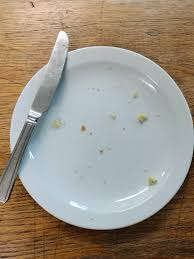

Scones
Home

Description
Scones are baked with flour, are normally eaten in the morning as breakfast with tea, juice or coldrink.
- 4 cups of flour.
- 1 cup of sugar.
- 4 tea spoons of baking powder.
- 2 large eggs.
- 1 cup of milk (amasi).
Ingridients
- Mix 4 cups of flour with 1 cup of suger and 4 tea spoons of baking powder
- Then mix the mixture of suger and flour with eggs.
- Then mix the above mixture with 1 cup of milk.
- Put small pieces of that mixture in an oven, for 30 minutes. The oven should be medium.